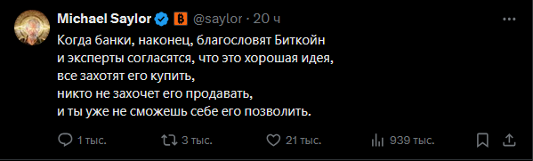
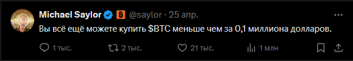
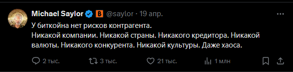

Я утверждаю, что текущий цикл роста биткойна является последним. В ближайшие пару лет цена, скорее всего ещё будет расти. Но затем начнётся ровное и стабильное падение.
Я утверждаю, что Биткойн никогда не достигнет отметки в $1 000 000. Биткойн адепты верят в миллион, но реальность такова, что до этой отметки он никогда не дойдёт.
Я утверждаю, что биткойн - это пузырь (или пирамида, кому как угодно). единственный механизм генерации прибыли в биткойне это привлечение новых участников.
В этом видео я объясню, почему я так думаю. Добро пожаловать на мой канал! Меня зовут Гедеон Кошелько. Я инвестор с десятилетним стажем: шесть лет преподавал экономику в НГУ и последние четыре года работал финансовым консультантом в ВТБ.
Начнем с того, что с фундаментальной точки зрения существует три класса активов с точки зрения инвестирования:
Товары: это золото, нефть, техника, квартиры. Ценность товаров зависит от того насколько тот или иной товар востребован на рынке. Чем более востребован товар, тем он дороже.
Деньги: сами по себе деньги ценности не имеют. Ценность денег зависит от ценности товаров и услуг на которые можно эти деньги обменять.
Ценные бумаги: в основном это акции и облигации (но есть и другие более экзотичные ценные бумаги, о которых я расскажу в последующих видео, так что подписывайтесь что бы не пропустить). Стоимость ценных бумаг зависит от того сколько дохода они генерируют (или будут генерировать в будущем).
Биткойн с точки зрения этой классификации относится к классу денег, а ценность денег, как мы уже выяснили равна ценности товаров и услуг на которые эти деньги можно обменять. Можете считать это экономической аксиомой.
Никто не будет принимать деньги в качестве оплаты за свой труд, если эти деньги нельзя обменять на что-то полезное.
Самая фундаментальная проблема с биткойном в том, что в мире крайне мало таких товаров и услуг которые бы эксклюзивно продавались за биткойн. Настолько мало, что можно сказать даже сказать, что их вообще нету. А это самая основная функция денег, все остально вторично.
А так как по определению, стоимость денег равна стоимость товаров и услуг которые можно за эти деньги купить, то и стоимость биткойна должна быть около 0. Но никак не триллион долларов.
Например, доллары - это настоящие деньги, потому что их покупают, когда нужно купить товар из США, юани покупают, когда необходим товар из китая. Это деньги нормального человека, их покупают для того, что бы потом обменять их на какой-либо товар или услугу.
При этом если товар можно купить за обычные деньги и за биткойн, то это не считается. На кой хрен покупать биткойн за доллары, и потом покупать товар за биткойн, если этот же товар можно напрямую купить за доллары.
Как мы уже выяснили, биткойн покупают не для того, что бы обменять его на товар или услуг (как обычные деньги). А для того, что бы перепродать его подороже следующему "инвестору". В этом и кроется фундаментальная причина почему рано или поздно биткойн будет стоить ноль или около того.
Никто на самом деле не планирует держать биткойн вечно, абсолютно каждый участник планирует его впоследствие перепродать подороже.
Если кто-то говорит, что он будет держать биткойн до самой пенсии - то перед вами человек, который просто хочет заманить вас в пирамиду.
Вы можете возразить дескать кучу других активов тоже покупают с целью перепродажи, например золото, акции, нефть, и т.д. Почему они не являются пирамидами, а биткойн является.
А разница заключается в том, что несмотря на наличие перекупов, у всех других активов есть реальные покупатели, которые покупают товар не с целью перепродажи, а с целью использования.
Золото покупают с целью производства ювелирных украшений и электроники. Акции покупают с целью получения пассивного дохода. Доллары покупают, что бы купить товар из США.
Раньше биткойн был хорошим инструментом для проведения трансграничных платежей (например если вы хотите купить что либо в обход санкций или избежать бюрократии). Но сейчас стейблкойны в разы удобнее для удовлетворения этой потребности.
Самый главный миф относительно биткойна - это то, что это инструмент для сохранения капитала. Но это в корне неверно. Сохранять капитал необходимо в том, что фактически нужно людям.
Если ваша цель это сохранить капитал, то сохранять его нужно в драгоценных металах и акциях, но никак не в биткойне.
Биткойн это это один худших инструментов для сохранения капитала.
Адепты биткойна очень часто сравнивают биткойн с золотом, что в корне неверно. Как минимум потому что биткойн - это деньги, а золото это товар.
Это совершенно разные классы активов, цена на которые формируется по совершенно различным законам.
Единственное что объединяет биткойн и золото это то, что их лимитированное количество. Но это не делает биткойн золотом.
Это то же самое как вас называть огурцом, потому что вы на 80% состоите из воды и огурец на 80% состоит из воды.
Биткойн сравнивают с золотом по той причине, что те кто уже вложился в биткойн хотят что бы вы его купили и не выходили из него в обозримом будующем. Это позволит им зафиксировать максимальную прибыль. И аналогия с золотом это лучший способ побудить вас на такое поведение.
Если уж на то пошло, то биткойн это полная противоположность золоту. Цена на золото растет в период неопределенности и кризисов. А цена на биткойн растет, когда рынки ожидают роста экономики.
Идея использовать биткойн как инструмент для сохранения капитала, чем-то напоминает то, как Мавроди создавая МММ-2011 называл это "кассой взаимопощи".
Идея была в том, что сначала человек вносит деньги в МММ. Потом когда ему требуются деньги он их временно берет, но потом обязательно возвращает обратно. И таким образом деньги в так называемой "кассе взаимопощи" никогда не закончатся.
Это чем-то напоминает то, как крипто-инвесторы планируют использовать биткойн, не так ли?
История показала насколько состоятельна эта идея. Человеческая жадность безгранична.
Ни для кого не секрет, что цена на биткойн растет циклами. Примерно раз в 4 года цена на биткойн резко вырастает, затем падает и потом через какое-то время этот цикл повторяется.
А вы никогда не задумывались какова природа этих циклов? А ответ достаточно простой - в конце цикла, свою прибыль фиксируют те, кто зашел в начале цикла.
Но что бы система продолжала работать, нужен постоянный приток новых участников. 4 года это примерно тот срок за который успевает вырасти новое поколение "инвесторов", готовых купить биткойн дороже, чем те, кто заходил до них.
Вы можете возразить мол, что в экономике тоже есть циклы - периоды роста сменяются спадами. И раз периоды роста и спада вполне естественны в экономике, то они естественны и в биткойне.
Однако причина экономических циклов совсем другая - кредиты.
Кредиты позволяют тратить больше денег, чем человек фактически располагает на текущий момент времени. Сначала люди берут кредиты, растет потребление, растет производство и как следствие вся экономика. Это называется фазой роста и фаза роста в эпоху глобализации происходит во всех экономиках одновременно.
Но в какой-то момент наступает момент, когда кредиты нужно отдавать. И тогда весь этот процесс разворачивается в обратную сторону: падает потребление, падает производство и как следствие падает вся экономика.
Такое явление в экономике хорошо изучено и называется долговыми циклами. Этот отлично объясняет Рэй Далио в книге "Большие долговые кризисы" — очень рекомендую.
Так что макроэкономические циклы и циклы в биткойне имеют совершенно разную природу. Циклы в экономике возникают вследствие кредитов, а циклы в биткойне возникают, потому что требуется время что бы привлечь новых участников.
Текущий цикл роста биткойна является последним, потому что на каждой итерации цикла количество новых участников должно быть в несколько раз больше чем из было до этого.
Но такого количества людей уже попросту нет. Все кто хотел вложиться в биткойне уже вложились. Каждый 5 американец уже имеет определенную часть своего портфеля в биткойне. Сам президент США пампит биткойн, MicroStrategy покупает биткойн десятками миллиардов долларов.
Капитализация биткойна уже больше триллиона долларов. Примерно столько же стоит Google, Apple, MicroSoft. Как вы сами думаете достаточно ли еще в мире тех, кто еще не вошел в биткойн для еще одной итерации?
Мое предсказание заключается в следующем. Пока что притока денег в биткойн хватит еще на пару лет, за счет того, что у руля сейчас находится Дональд Трамп. И так же есть достаточное количество институциональных инвесторов по типу MicroStrategy.
Но после этого - спад и сдувание этого пузыря неизбежно. После того, как Трамп закончит свое президенство биткойн больше никогда не будет расти.
В биткойне есть огромное количество технических проблем, которые делают его использование в качестве полноценных денег практически невозможным.
Долгие транзакции. Когда проведение транзакции занимает 1 час, это делает невозможным использование биткойна для 95% (если не больше) процентов операций.
В блокчейне может проводиться 7 транзакций в секунду. Для сравнения VISA может праодить 10.000 транзакций в секунду.
Неудобные единицы измерения. Когда необходимо расчитываться сотыми или тысячными долями биткойна, то крайне неудобно.
Дорогие транзакции. 1 доллар за транзакцию это СЛИШКОМ много, что опять же делает невозможным использование биткойна в ежедневных операциях.
Публичность базы данных. Это жесточайший косяк с точки зрения анонимности, при чем в этом нету никакой необходимости.
Аутпуты вместо балансов. С каждым номером счета ассоциируется не баланс (как это происходит в банках) а аутпуты. Не знаю по какой причине было принято такое техническое решение, но факт в том что это крайне неудобно.
Большое количество счетов. По какой-то причине сатоши сделал крайне простым создание и использование большого количества счетов, намного удобнее подход когда один пользователь - один номер счета.
С технической точки зрения биткойн очень сильно проигрывает фиатным валютам и стейблкойнам.
Но несмотря на все эти технические проблемы капитализация биткойна все равно составляет один триллион долларов.
Это происходит потому что если использовать биткойн всего пару раз в год (что бы войти в пирамиду и выйти), то эти технические недостатки вообще не являются проблемой.
Даже более того, эти технические проблемы преподносятся, как фича.
Долгие транзакции? Ну так ведь это необходимо, что бы деньги были децентрализованными, вы же не хотите что бы ваши деньги принадлежали банкам?
Публичная база данных? Зато это позволяет всем верифицировать что транзакция прошла успешно, такого нету в фиатных деньгах!
Дорогие транзакции? Лучше платить майнеру за проведение транзакции а не банку за кредит!
Самый главный механизм генерации прибыли в пирамиде - это завлечение новых участников. Это основа абсолютно любой пирамиды. И биткойн тому не исключение.
Если вы когда-либо общались с теми кто купил криптовалюту, то вы понимаете о чем я.
Каждый уважающий себя криптовалютный инвестор на каждом углу кричит о том, что он криптовалютный инвестор. Он таким образом пытается заманить как можно большее количество новых участников в пирамиду.
Вспоминается анекдот:
- Как узнать что перед вами крипто-инвестор?
- Он вам об этом сам скажет в первые 10 минут знакомства.
В этом плане крипто-инвесторы хуже веганов (веганы по крайней мере материально не заинтересованы в том, что бы вы становились веганом).
Наличие модных терминов: DeFi, NFT, DAO, Layer 2, токеномика, газ, стейкинг, смарт контракты, и т.д.
У тех, кто не очень хорошо разбирается в экономике и инвестировании все эти термины создают ощущение, что в криптовалютах присутствует что-то сакральное, что-то чего нету в традиционных финансовых инструментах.
Но реальность такова что все эти DeFi приемы не являются чем то новым. И даже более того, все что есть в DeFi есть и в традиционных финансах в намного больших мастабах.
В биткойн сообществах очень активно играют на чувстве упущенной выгоды (FOMO).
Вот если бы вложились в биткойн 10 лет назад, то сейчас бы вы имели столько денег...
А вот есть человек который продал дом, а сейчас он может купить 10 домов...
В первые дни существования биткойна можно было за один доллар купить 200 биткойнов, а сейчас это полтора миллиона денег...
В любом Bitcoin сообществе обязательно появляются посты и картинки на тему того, как кто-то разбогател на биткойне, купил яхту, дом. Игра на чувстве жадности это основная стратегия для привлечения новых участников в биткойн.
Вот вам несколько твитов от самого главного крипто-инвестора в мире - Майкла Сэйлора. Для тех кто не знает, его компания MicroStrategy, покупает биткойн в промышленных мастабах. На текущий момент они владеют биткойнами на $35 миллиардов долларов. И вот собственно из чего состоит его твиттер.
  
И это не какой-то единичный случай, так себя ведут абсолютно все крипто-инвесторы. Весь твиттер, реддит, фейсбук забит подобными постами во всех крипто-сообществах. Главная задача крипто-инвестора - привлечь как можно больше других крипто-инвесторов в биткойн.
Одним из самых главных аргументов в пользу биткойна является то что это неподконтрольные правительству деньги. Вы же нехотите что бы ваши деньги находились на счетах грязных капиталистов? Но увы это явно не является хоть сколько-нибудь значимым фактором. И доказательство этому - Monero.
Для тех, кто не знает: Monero - это, по сути, тот же биткойн, только все транзакции в нём полностью приватные, комиссии в 10 раз меньше и быстрее.
Если в биткойне можно увидеть, кто перевёл деньги, кому и сколько, то в Monero эта информация полностью зашифрована.
С точки зрения "цифрового анархизма" и ухода от финансовых институтов Monero в разы совершеннее биткойна.
Причина проста: абсолютная анонимность делает Monero крайне удобным для преступников. Поэтому Monero массово делистят с бирж и купить его становится все сложнее. А простота покупки это очень важное условие для притока новых участников.
Сам факт того, что монеро не взлетел - это доказательство того, что людям плевать на децентрализованность и независимость от финансовых институтов.
Но это ведь и не проблема, потому что биткойн не про анонимность, биткойн - это про жадность.
Другой отличный аргумент в пользу того что криптовалюты это пирамида - это сам факт существования такой криптовалюты как DOGE.
Но как вы тогда можете объяснить тот факт, что капитализация DOGE на момент написания этой статьи составляет 50 миллиардов долларов?
Для тех кто не в курсе DOGE - это самый главный мем-койн на текущий момент (то есть монете название которой это шутка).
А ответ прост, DOGE - это точно та же самая пирамида, в которой старые участники зарабатывают за счет новых.
Но только у DOGE несколько другой "вайб".
Мем-койны это более удобные пирамиды, потому что такие монеты удобнее продвигать.
Можно клепать огромное количество мемасиков, спамить ими в твиттере и фейсбуке и других соц сетях.
Механизм генерации прибыли в биткойне и DOGE абсолютно идентичный.
Я не говорю, что биткойн - плохо, или что биткойн это хорошо. Я говорю, что биткойн - это инвестиционный инструмент, необычный, но всё же инструмент. На его цену влияют несколько другие факторы, нежели чем на цену товаров и ценных бумаг.
Мне важно, чтобы вы понимали, откуда берётся прибыль если вы инвестируете в биткойн, и не строили иллюзий, будто он будет расти вечно - не будет.
Биткойн это хреновый инструмент если ваша цель это сохранение капитала (акции и золото намного лучше).
Биткойн это хреновый инструмент если ваша цель это международные транзакции в обход санкций и без бюрократии (стейблкойны лучше).
Биткойн это хороший инструмент если вы предполагаете, что количество денег в экономике будет увеличиваться. Вероятность такого сценария достаточно высока.
Во-первых, в США огромный государственный долг - около 100.000$ на каждого жителя.
Во-вторых, у страны сейчас весьма эксцентричный президент. Напечатать огромное количество денег, чтобы покрыть долги - звучит как нечто, что Дональд Трамп вполне мог бы сделать.
Когда ко мне обращаются за консультацией, я советую либо вообще избегать биткойна (если вы не переносите риски) либо вкладывать в биткойн максимум это 20% от своего портфеля, если уж так сильно хочется. Но ни в коем случае не держать 100% портфеля в криптовалюте.
Мое предсказание: текущий роста цены на биткойн - это последний цикл биткойна. Новых "покупателей", готовых поддерживать рост цены, больше не будет.
Будет еще одна итерация печати денег центробанками, не такая мастабная как во времена ковида. Но тем не менее достаточно большая, что бы запампить цену биткойна до 160.000 - 180.000 долларов за биткойн. После этого цена на биткойн будет снижаться и уж точно никогда не достигнет отметки в 1.000.000$ за монету.
Я полностью открыт к переубеждению. Если вы со мной не согласны, то приводите свои аргументы в комментариях. Если у Вас есть мнение почему я не прав, я готов к нему прислушаться и обсудить.